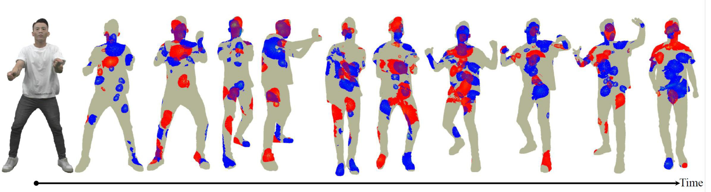
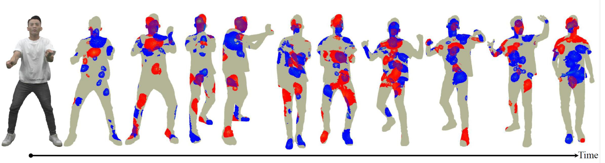
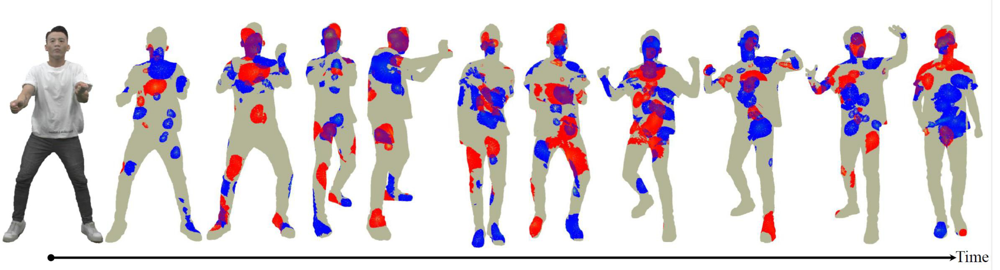

Comparison of Results
Click the button to view the task-free scenario:
 

Task-dependent
Research on visual attention modeling for 3D point cloud data in both task-free and task-dependent scenarios
Reference
Distorted
Front View
Back View
We explore visual saliency in dynamic point clouds, examining how humans allocate attention when viewing 3D point cloud videos in VR. We present two complementary studies: task-dependent vs. task-free.
Understanding visual attention in 3D environments is crucial for various applications including compression, transmission, quality assessment...
The experimental apparatus used in our studies is shown below:
Figure 1: Apparatus setup.
Click the button to view the task-free scenario:

Task-dependent
For collaboration opportunities about this research, please contact:
Email: pablo.cesar@cwi.nl, irene.viola@cwi.nl
For questions about this research, please contact:
Xuemei Zhou
Email: xuemei.zhou@cwi.nl